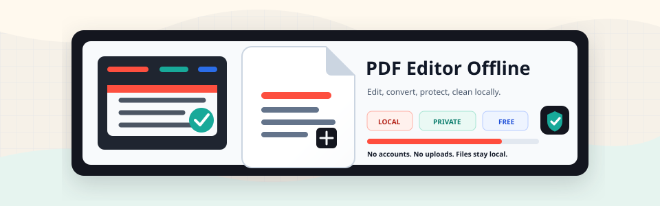

Edit and annotate
Page editing, metadata, watermarks, signatures, drawings, comments, images, file attachments, popup notes, polygons, and annotation appearance controls.
Local PDF editing for desktop workflows
Edit, convert, protect, redact, and clean PDFs on your machine. No account, no upload queue, no cloud storage.

Public compatibility evidence
Nine synthetic fixtures run across PyMuPDF, pdfplumber, and PDFium. Release results publish page consensus, extraction counts, render deltas, engine versions, and stable JSON schemas—never document content.
What the repo supports
The public surface is split into web workflows, API endpoints, CLI commands, and reusable Python core modules.
Page editing, metadata, watermarks, signatures, drawings, comments, images, file attachments, popup notes, polygons, and annotation appearance controls.
PDF export to Word, PowerPoint, Excel, JPG, Markdown, TXT, EPUB, SVG, and PDF/A, plus document, text, image, CSV, JSON, and HTML imports.
Merge, split, extract, insert, duplicate, organize, rotate, crop, resize, compress, repair, number, and remove blank pages.
AES PDF protection, granular permissions, unlock, metadata cleanup, hidden data cleanup, permanent redaction, temp cleanup, and safe upload validation.
Content-free accessibility inspection, visual and semantic change review, Safe Edit refusal gates, redaction proof, and versioned Trust Lab evidence.
FastAPI routes, Typer commands including inspect-accessibility and content-edit-check, stable JSON schemas, batch examples, local sample PDFs, and browser-tested workflows.
Local workflow
60-second product proof
A real capture of the local app with the repository's synthetic redaction PDF. No staged dashboard, no production document, no cloud service.
Silent 60-second sequence: verify the local runtime, load the synthetic sample, find two SECRET_TOKEN matches, redact both, verify zero matches, and inspect the result.
Reproduce in under five minutes
Captured proof
These images were captured after real API-backed operations using the sample PDFs included in this repository.
demo-basic.pdf.Run it
The repo supports a Python package, local web app, Docker image, and direct Python imports.
pip install pdf-editor-offlinegit clone https://github.com/OthmaneBlial/pdf-editor-offline.git
cd pdf-editor-offline
pip install -e ".[dev]"
./start.shpdf-editor-offline extract text input.pdf
pdf-editor-offline extract images input.pdf --output-dir ./images
pdf-editor-offline edit metadata input.pdf title "Quarterly Report"
pdf-editor-offline add image input.pdf stamp.png 0 100 120 180 80 --output stamped.pdfLocal fixtures
Deeper documentation
The docs page covers architecture, tool categories, API surface, security and privacy, examples, release checks, and copied source docs.